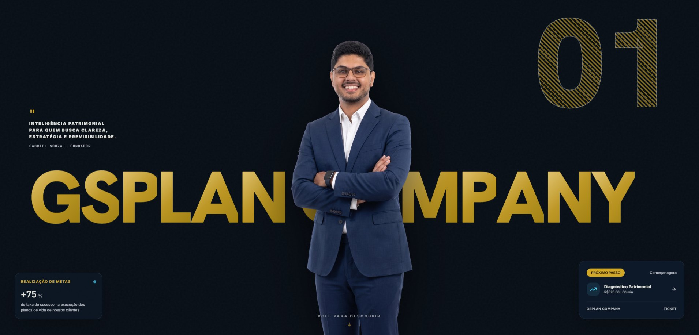
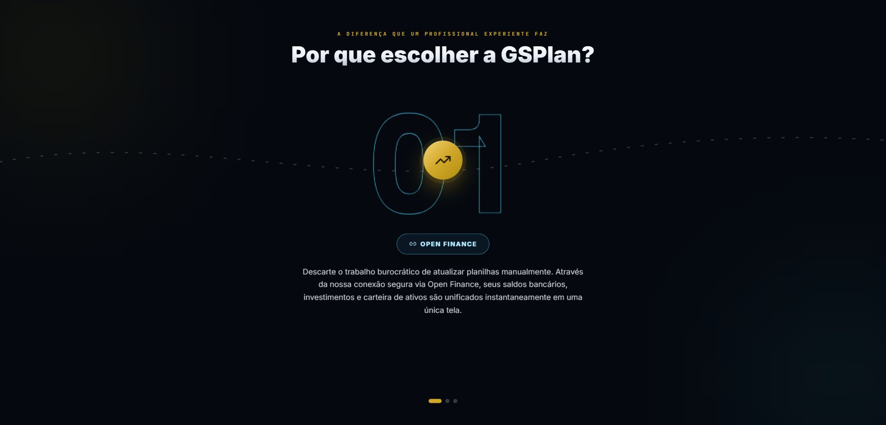
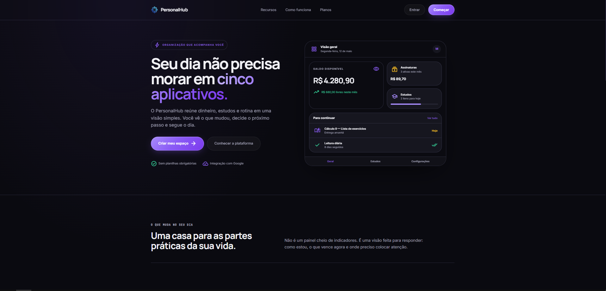
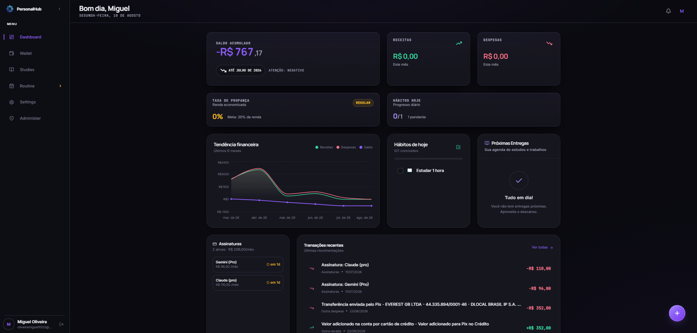
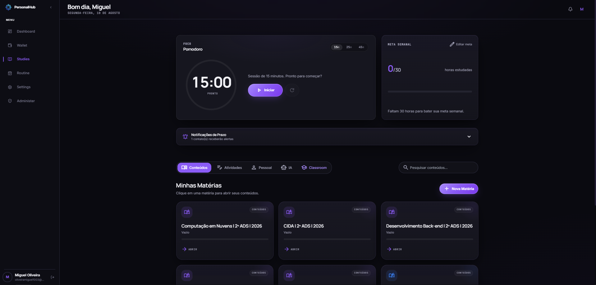

GSPlan
Gestão financeira e patrimonial: orçamento, planejamento, investimentos e seguros em uma experiência integrada.
Miguel Oliveira · Taubaté, SP
Estudante de Análise e Desenvolvimento de Sistemas no SENAI. Construo dashboards e aplicações web para aprender na prática, e gosto de construir bem.
Ver projetos →01 — Sobre
Concluí o técnico em ADS e sigo na graduação no SENAI Taubaté. Ainda estou no começo da carreira, então aproveito cada projeto para aprender algo novo e melhorar o que já sei.
Projetos integradores e de extensão feitos em grupo, do requisito à entrega.
Sempre estudando algo novo, de redes e Linux a IA e nuvem.
Entendo o problema antes de programar e vejo a ideia ganhar forma na tela.
HTML5 · CSS3 · JavaScript · Python · Flask · FastAPI · Java · SQL · PostgreSQL · Git · Docker
02 — Sobre mim
Sou o Miguel, de Taubaté. Antes das linhas de código, minha vida girava em torno de treinos, competições e metas. Essa história explica muito de como eu trabalho hoje: com disciplina, constância e vontade de evoluir um pouco a cada dia.
Ela tem três partes.
02 — Começo
Antes de ser desenvolvedor, fui atleta de alto rendimento. Treinos diários, competições e uma rotina inteira construída em torno de um objetivo.
Foi no esporte que aprendi a lidar com pressão, a perder, a recomeçar e a respeitar o processo. Resultado não aparece de um dia para o outro, e isso eu levo para tudo.
02 — Meio
Com o tempo, fui passando de atleta a desenvolvedor. A curiosidade pela tecnologia virou estudo, o estudo virou o curso técnico e, aos poucos, os treinos foram dividindo espaço com o computador.
A mudança não apagou o atleta. Levei comigo a disciplina, o foco e a vontade de competir comigo mesmo para ser melhor do que ontem.
02 — Hoje
Encontrei no desenvolvimento o meu porto seguro. Hoje curso Análise e Desenvolvimento de Sistemas no SENAI e passo boa parte do tempo construindo projetos, quebrando a cabeça com problemas e aprendendo algo novo a cada entrega.
É aqui que me sinto em casa, e é daqui que quero construir a minha carreira.
Ver o que já construí →03 — Projetos


Gestão financeira e patrimonial: orçamento, planejamento, investimentos e seguros em uma experiência integrada.



Finanças, rotina e estudos num só lugar, com Pomodoro, metas e uma visão clara do dia.
04 — Formação
05 — Certificações
Clique em um certificado para abrir.
06 — Contato
Estou aberto a estágio, vagas júnior e projetos freelance. Pode me chamar por e-mail ou por uma das redes.
oliveiramiguel1003@gmail.com